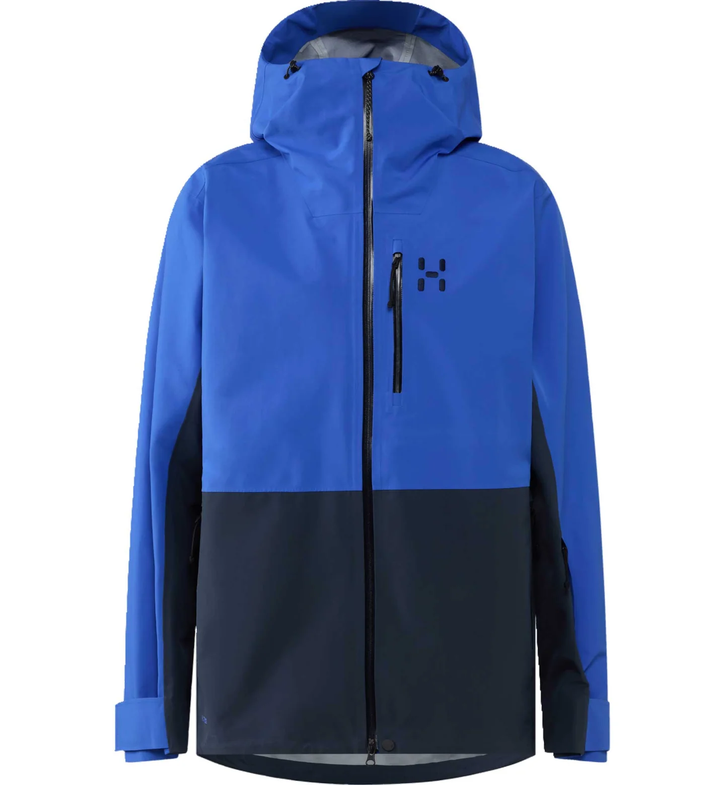
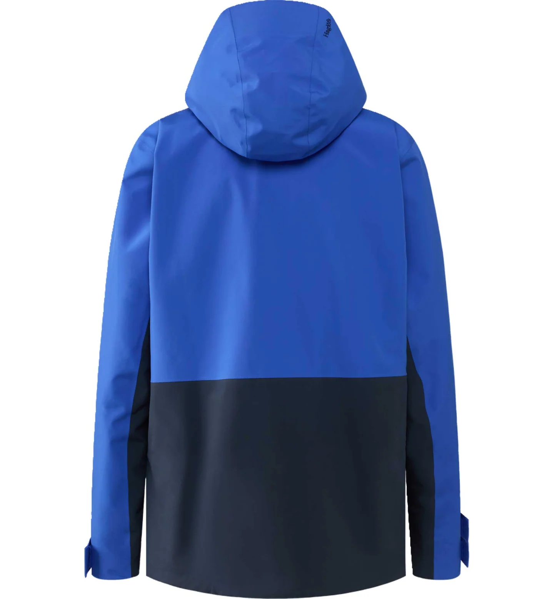
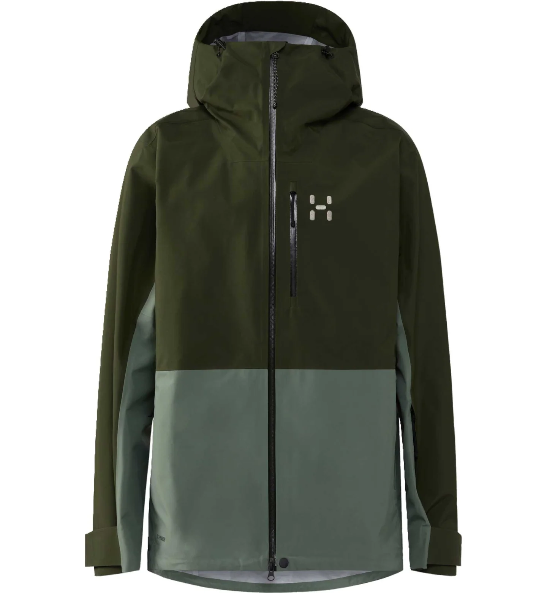
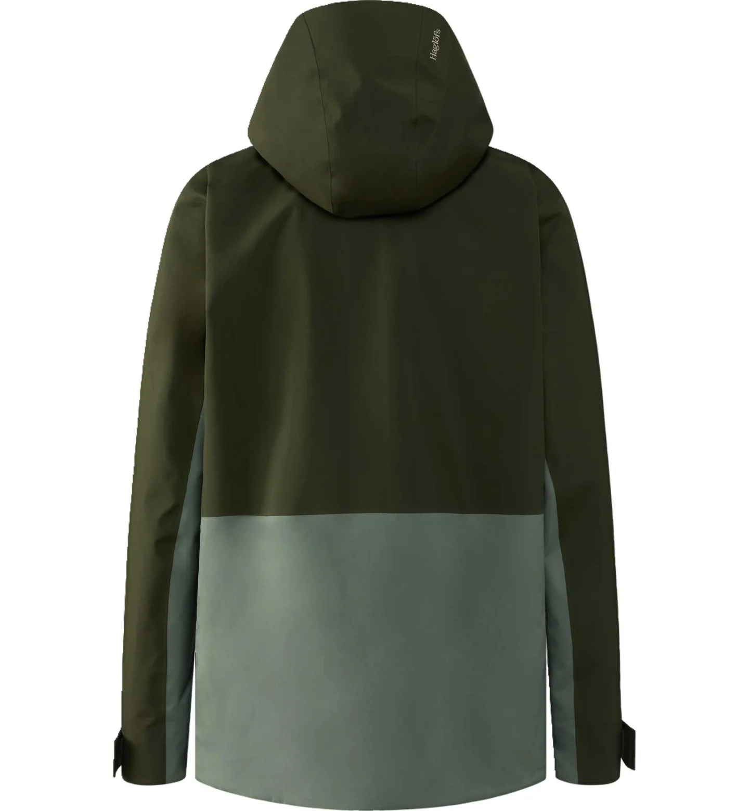
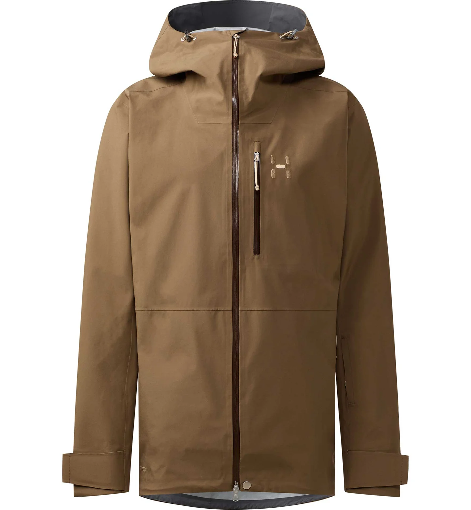
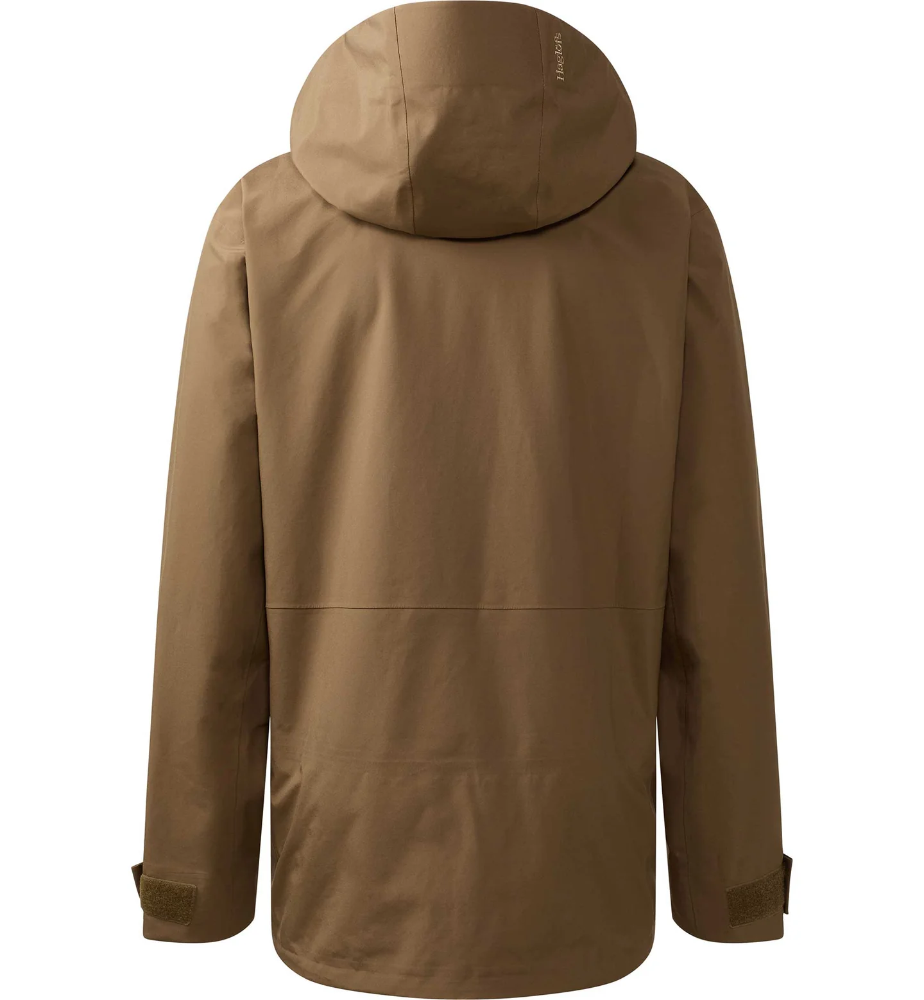
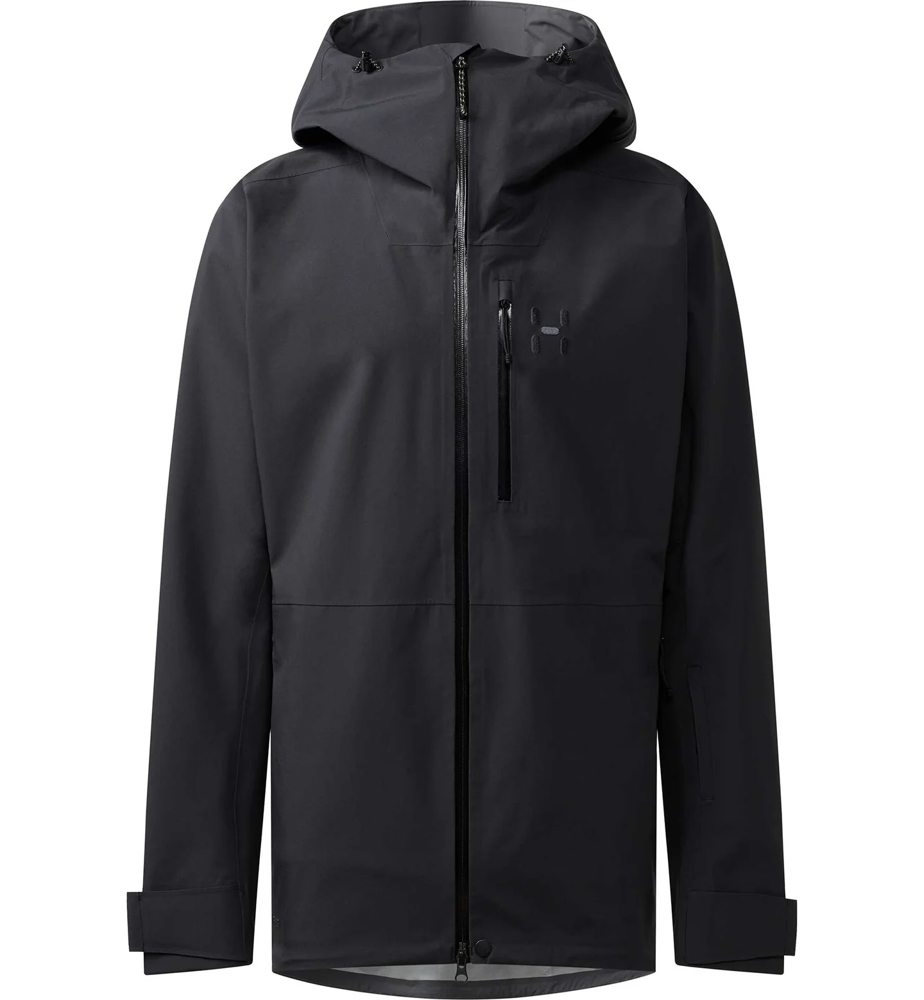
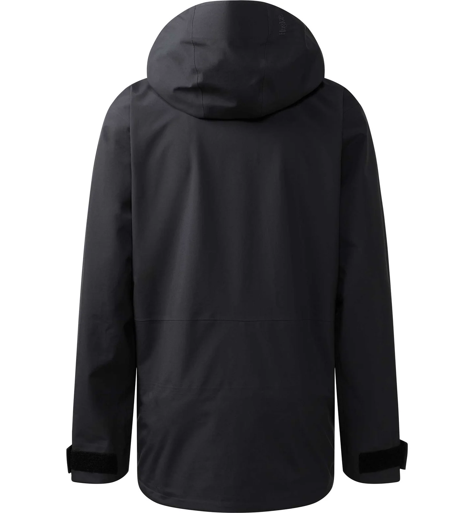

← All ski jackets

Northern Blue / Tarn Blue — Front

Northern Blue / Tarn Blue — Back

Seaweed Green / Chlorophyll Green — Front

Seaweed Green / Chlorophyll Green — Back

Teak Brown — Front

Teak Brown — Back

True Black — Front

True Black — Back
Haglöfs · Style 607936
Alper Proof Jacket Men
¥59,400 (tax included) — final total confirmed at checkout
Paying in another currency? Rates vary by country and change daily — search "JPY to [your currency]" online for today's rate.
Best for: All-mountain resort skiing — best value shell in this lineup
Breathability
20,000 g/m²/24h
About this jacket
New for Autumn/Winter, the Alper Proof is Haglöfs' value-focused all-mountain jacket — built with the brand's in-house PROOF™ Pro waterproof fabric so it covers the everyday ski-resort essentials (helmet-compatible hood, ventilation, powder skirt) without the price tag of a GORE-TEX shell.
Key features
- Adjustable, helmet-compatible hood
- Zippered pit-zip ventilation
- 2 zippered hand pockets, plus one large chest pocket
- Ski-pass pocket on the left upper sleeve
- Stretch snow skirt with rubber grip
- Adjustable drawcord hem
- 2-way center-front Aquaguard® zip
- Wide velcro cuff adjusters
Materials & specs
| Shell fabric | 3-layer PROOF™ Pro, 100% recycled polyester, 75 denier (denier = fabric thickness; higher = tougher, more durable) |
|---|
| Waterproofness | 20,000mm |
|---|
| Breathability | 20,000 g/m²/24h (higher number = more breathable; a solid everyday resort level) |
|---|
| Weight | 670g (men's size L) |
|---|
Size chart (cm)
Swipe left to see all columns →
| Size | Chest | Waist width | Hem width | Body length | Sleeve length |
|---|
| S | 118.0 | 109.0 | 111.0 | 80.5 | 84.5 |
| M | 124.0 | 115.0 | 117.0 | 81.5 | 86.0 |
| L | 130.0 | 121.0 | 123.0 | 82.5 | 88.0 |
| XL | 136.0 | 127.0 | 129.0 | 83.5 | 89.5 |
All measurements in cm, garment laid flat. Multiply by 0.39 for an approximate inch value. No XXL in this style.
Colors & sizes in this style
Colors
Northern Blue / Tarn Blue
Seaweed Green / Chlorophyll Green
Teak Brown
True Black
Sizes
S
M
L
XL
Styles and sizes shown above are what this store carries — please ask staff to confirm what's currently in stock.
Compare with other Ski Series jackets
Tax-free shopping: Japan's tax refund system changed in November 2026 — you now pay the tax-included price here in store, then claim a refund of the consumption tax when you leave Japan. Show your passport and receipt at the tax refund counter at the airport (within 90 days of purchase). Ask staff for details.
Not sure which one fits your trip? Show this page to any Haglöfs Shibuya staff member — we're happy to help in English.